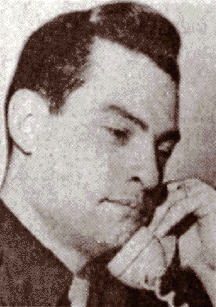
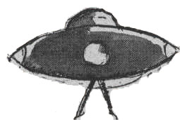
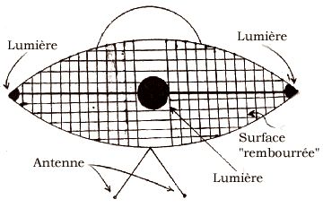
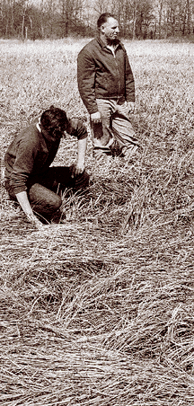
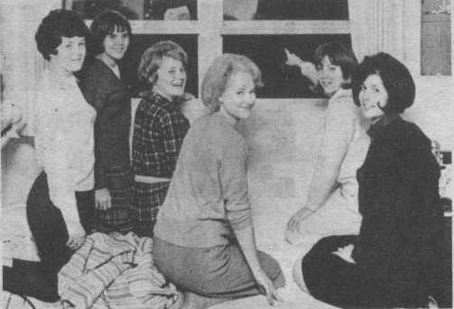
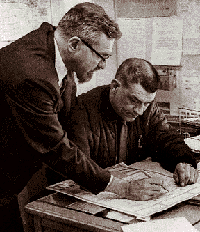
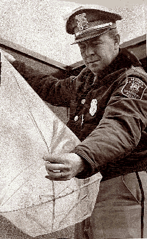
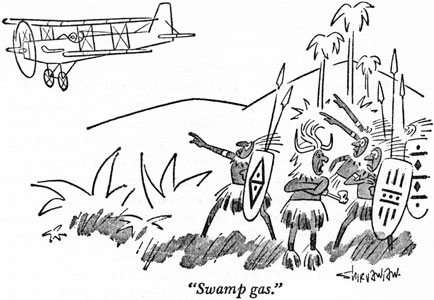

La goutte d'eau qui fit déborder le vase de Blue
Book, l'enquête officielle ovnis aux USA et déclencha le projet
Colorado, l'enquête universitaire "indépendante" sur le sujet.
Dexter (14 mars)
Le sheriff Buford Bushroe l'a "perdu dans les arbres"

Le , Buford Bushroe et J. Foster, adjoints au sheriff dans la voiture de patrouille
19, indiquent avoir vu dans le ciel des objets suspects en forme de disque, aux couleurs semblables aux étoiles,
rouges et vertes, se déplacer très rapidement, effectuer des virages pointus, se déplaçant de gauche à droite,
allant en direction du nord-ouest :
C'est la chose la plus étrange que [nous ayons] jamais vue. Nous n'aurions pas cru cette histoire si nous ne
l'avions vu de nos propres yeux. Ces objets pouvaient se déplacer à des vitesses fantastiques, et faire des
virages très pointus, plonger et monter avec une grande manœuvrabilité. Nous n'avons aucune idée de ce que ces
objets étaient, ou de l'endroit d'où ils pouvaient venir.
le département du sheriff du comté de Livingston (Michigan) appelle
également, déclarant avoir également vu les objets et envoyant une voiture à l'endroit.
Une minute plus tard le département de police de Yipsilanti appelle également, indiquant
que l'objet est observé l'endroit US-12 et I-94 (intersection d'une autoroute nationale et inter-états).
le département du sheriff du comté de Monroe (Michigan) appelle et
indique également voir les objets.
, les officiers de la voiture 19 rappellent, indiquant qu'ils viennent de voir 4 autres objets
au même endroit, se déplaçant à grande vitesse : il y avait 4 de ces objets volant en formation en ligne, selon
une direction Nord-Ouest.
, le colonel Miller, directeur de la défense civile du comté, est prévenu. Ne sachant que
faire, il indique de garder un œil sur les objets et de vérifier avec l'aéroport de Willow Run.
, la voiture 19 rappelle pour indiquer que 2 autres objets arrivent côte-à-côte du Sud-Est,
survolant le comté de Monroe. plus tard, le département du sheriff du comté de Monroe indique avoir
juste repéré les objets, et recevoir des appels des habitants. Ils appellent la base USAF de Selfridge (Michigan)
qui indique également avoir repéré (probablement au radar) des objets au-dessus du lac Erie et n'avoir pu en obtenir d'identification. La base indique qu'elle va contacter le
centre opérationnel de Détroit et rappellera plus tard pour confirmation.
les adjoints Patterson et Broderick regardent hors de leur bureau et voient une lumière
briller au-dessus de la région de Yipsilanti. Elle ressemble à une étoile, mais se déplace du Nord vers l'Est. La
voiture 19 les voit partir : ces objets partaient hors de vue, et n'étaient plus vus par la suite.
toujours pas de confirmation de Selfridge.
Bushroe : Il pouvait balancer en arrière et en avant comme un pendule, puis partir en l'air à une vitesse
incroyable, stationner puis descendre tout aussi vite.
La police de Dexter (Michigan) et les sheriffs du comté de Livingston (Michigan),
contactés par Bushroe and Foster, indiquèrent qu'ils voyaient les mêmes objets s'engager dans les mêmes
manœuvres.
En tout, 7 témoins oculaires ont signalé des objets volants non identifiés manoeuvrant au-dessus des comtés de
Livingston et de Washtenaw. Il s'agit d'officiers de police adjoints des sherrifs des deux comtés. Ces observations
vont provoquer un tumulte et la région et une chasse féroce aux ovnis.
Milan (17 mars)
Trois jours plus tard , 2 adjoints du sheriff du comté de Washtenaw,
le sergent Neil Schneider et l'adjoint David Fitzpatrick voient 3 ou 4 objets circulaires près de Milan (Michigan).
Alternativement ils stationnent, montent et descendent rapidement à la vitesse d'un jet, leurs lumières rouges,
blanches et vertes luisant puis s'éteignant. Dans un rapport au NICAP ils indiqueront que 2 objets opéraient
ensemble, tournant et volant en formation, tandis qu'un 3ᵉ objet stationnait à plus basse altitude. Les adjoints
appellent les responsables de l'aéroport de Willow Run qui ne peuvent le confirmer au radar.
Monroe (20 mars)
2 autres adjoints de Washtenaw, BuFord Bushroe et John Foster tentent de suivre le même type d'objet dans le nord
du comté . Des habitants des comtés de Livingston et de Monroe rapportent avoir vu les
objets.
Le patrouilleur de Dexter Robert Huniwell déclare avoir repéré un objet dans le ciel à Quigley (Michigan)
et Brand roads (Michigan) entre et . Il indique que
l'objet volant avec des lumières pulsantes rouges et vertes est arrivé près du sol, à survolé une voiture de la
voiture de patrouille et a été rejoint par un second véhicule lors de son ascension.
Douglas Harvey, le sheriff du comté de Washtenaw, dépêche tous les adjoints disponibles sur les lieux. 6 voitures
de patrouille, 2 hommes dans chaque, et 3 inspecteurs encerclent la zone. Ils vont plus tard prendre en chasse un
objet volant le long de Island Lake Road sans réussir à l'attraper.
Frank Mannor et sa famille voient les lumières de leur ferme de McGuiness Road :
J'ai été à 500 yards de cette chose et elle semblait en forme de pyramide. Elle avait une lumière ici et une
lumière là et ce qui ressemblait à un hublot.
Ce n'était pas comme les images de soucoupes volantes et cela avait une surface comme du corail. J'ai fouillé
tous les trous de ce comté et je n'ai jamais vu quelque chose comme ça.
Illustration basée sur la description d'un témoin

Mannor déclare que le véhicule, d'après ses propres lumières, apparaissait de la longueur d'une voiture et avait
une sorte de brume trouble sous lui alors qu'il se maintenait au-dessus du sol. Le fils de Mannor, membre de
l'équipe de poursuite du lycée de Dexter, ainsi que la femme de Mannor, ont également vu l'objet. Il est monté
jusqu'au sommet des arbres, a attendu un moment, puis est redescendu au sol. Il adopta différentes couleurs, blanc
au sol, bleu, puis rouge dans les arbres et changea à nouveau de couleurs en revenant au sol. Il émettait le bruit
d'un ricochet de balle, et comme une sirène, une fréquence vraiment élevée, déclarent-ils.
Après les observations, les témoins composent ensemble ce dessin dans les bureaux du sheriff du comté
de Washtenaw, montrant les lumières, la surface et l'antenne

Le chef de la police Robert R. Taylor et le Patrouilleur N.G. Lee vinrent à la ferme suite à l'appel de Mrs. Mannor
et entendirent le bruit. J'ai pensé que c'était une ambulance, déclare Lee. Le fils du chef, Robert, 16 ans,
vit aussi le véhicule rouge dans le ciel à environ : Il allait vers l'Est très lentement, puis
a accéléré et s'est dirigé vers l'Ouest, déclare-t-il. Il émettait du rouge et du blanc.
BuFord Bushroe, sheriff adjoint du comté de Washtenaw, observe également l'objet :
Cela ressemblait à un arc. C'était rond. Nous avons tourné autour et commencé à le suivre à travers Dexter sur 5
miles. Il était dirigé vers l'Ouest et nous nous sommes arrêtés. Nous l'avions perdu dans les arbres. Soit les
lumières se sont éteintes, soit il s'en envolé à une vitesse phénoménale. Il était à environ 1500pieds au-dessus du sol. Il se déplacait à environ 100 miles/h. On faisait du 70 miles/h avant de le perdre près de
Wylie Road.
Des wagons de collègiens des universités voisines du Michigan et du Michigan de l'Est convergent affluent dans la
zone après avoir entendu des bulletins radios à propos des observations.
Frank Mannor et son fils font des recherches à l'endroit où l'ovni a été vu atterrir

Lorsqu'on demande à Mannor si cela peut être une blague d'un collégien, il refute vigoureusement cette possibilité
:
Ils n'auraient pu le truquer. Il n'y avait rien ici, il n'y avait aucun moyen de s'échapper. Il y avait deux
voitures de patrouille sur la colline et encore plus à la maison.
Je connait chaque nid de poule de ce comté. Je n'ai jamais vu quelque chose comme ça. Mes yeux fonctionnent bien
et mon fils à une vision de 20/20. On ne peut se tromper tous les deux.
Ma femme dit que nous devont partir d'ici. Elle n'aime pas ça. Je ne ferme jamais les portes. Personne ne nous
dérange jamais.
Un professeur du collège Adrian propose la théorie que les lumières du nord pourraient être les objets que les
adjoints ont tenté prendre en chasse.
Hillsdale (21 mars)
Des camarades du College de Hillsdale faisant partie des 87 femmes étudiantes qui observèrent un ovni
flottant dans le ciel nocturne du Michigan pendant plusieurs heures [TRUE Flying Saucers and UFO Quarterly page 18, Vol 3, Automne 1976]

Le , une résidente du dortoir des femmes de l'Université de Hillsdale (Michigan)
voit un objet étrange dans le ciel. Elle le signale à William E. Van Horn, Directeur de la Défense Civile du Conté,
qui répond à l'appel et confirme qu'un objet rougeoyant lumineux rebondit en effet à travers un creux voisin puis
décolle.
Dans la soirée du , un appel a été reçu du Nouveau Dortoir des femmes de
l'Université de Hillsdale par le bureau de la défense civile... d'une étudiante signalant qu'une sorte d'engin
était descendu du Nord-Est, avait clignoté en passant près du dortoir et avait disparu au Sud. A ce moment comme
par la suite, la fille a décrit son observation de lumières rouge, vertes et blanches qui pulsaient. 17 étudiants
de l'Université ont fait cette observation.
Vers , un 2ᵉ appel a été fait par la fille au bureau civil de la défense les informant que
l'objet était réapparu et s'était rapproché du sol à approximativement un demi mile du dortoir. Van Horn a
immédiatement réclamé l'aide du département de police et 3 voitures plus lui-même se sont rendus dans un secteur à
2 miles du dortoir à l'Est. Van Horn a fouillé le secteur à 1/2 mile du dortoir et après qu'il n'ait rien pu
localiser, est immédiatement retourné au dortoir.
A son arrivée au dortoir, il a été escorté au 2ᵉ étage et conduit dans une salle faisant face à l'Est, d'où il a
fait l'observation suivante. Il a observé qu'il y avait un objet qui était à une distance approximative de 1500pieds à 1700pieds de lui... posé dans un creux du terrain... Les 2 lumières qu'il a vu lors de cette première observation
étaient faiblement orange du côté droit et d'un blanc sale du côté gauche. Après avoir observé ceci pendant une
période d'environ , les lumières ont commencé à devenir plus brillantes, la faible lueur orange
est devenue rouge et de couleur bien marquée, et le blanc sale est devenu un blanc brillant. Alors que les
lumières devenaient plus brillantes, l'objet ou le véhicule a commencé à s'élever.
Il s'était élevé à une hauteur approximativement de 100 à 150 pieds, s'arrêta momentanément et a recommencé à
descendre. Ceci s'est produit plusieurs fois. En même temps qu'il descendait, une lueur du côté opposé est apparue
et il pu voir qu'il avait une surface convexe.
Le véhicule a été également observé en train de se déplacer bien vers la gauche, et de gauche à droite, et a
continué ainsi sans heurts. Les montées et les descentes se faisaient à une vitesse estimé à 25 à 30 pieds par
minute. A aucun moment, les témoins ne purent entendre quelque type de son que ce soit.
Vers environ du matin, les témoins qui observaient encore la scène ont noté que les lumières
disparurent et ce fut tout ce qui fut observé.
Le secteur de cette observation n'était nullement un marais mais plutôt une zone qui était entretenue par le
Hillsdale College comme parc.
Emission télévisée de CBS, intitulée "Ovnis - Amis, ennemis ou fantaisie ?" ,
relatant les événements de Hillsdale
Le rapport a donné les résultats détaillés des essais faits sur le sol, les plantes, l'eau et les animaux à
proximité de l'emplacement d'atterrissage d'ovni. C'est seulement les conclusions tirées par le laboratoire CUFON.
CONCLUSIONS :
SOL: Le sol dépassait le seuil normal de radiations et avait également une teneur anormalement élevée en bore.
PLANTES: Les végétaux dégageaient un taux anormalement élevé de radiations. Les pigments bleus ne purent être
retrouvés lors des essais et ont été présumés détruits, mais ceci n'a pas semblé affecter le métabolisme des
plantes.
ANIMAUX: Les crustacés et amphibiens ont été exposé a des rayonnement plus élevés que la normale mais le
rayonnement le plus élevé a été enregistré sur les amphibiens. Les amphibiens étaient également notablement plus
affectés que les crustacés.
MINERAUX: Les roches sédimentaires étaient légèrement plus irradiées que les roches ignées et métamorphiques.
Il n'y avait aucun autre changement chimique ou structurel.
EAU: Tous les végétaux et animaux microscopiques étaient morts. L'eau dépassait les taux de radiations normaux
et contenait du bore en quantité anormalement élevée.
ENVIRONMENT: L'environnement dépassait les taux de radiations normaux et il a contenu un peu de bore qui est
étranger à ce sol.
CONCLUSION PRINCIPALE: Le secteur contenait un montant de rayonnement anormalement élevé d'une certaine source
inconnue. En outre, Le secteur contenait étrangement du bore qui a été trouvé dans l'eau et le sol. Ces deux
faits sont les seuls qui pourraient résulter de la présence d'un OVNI. A notre avis, nous ne disons pas qu'il y
avait eu un forcément des OVNIS, mais également ne savons pas expliquer ces deux faits. Cependant, nous croyons
que ce ne pouvait pas être du à des gaz de marais en raison des vents forts lors de la nuit de l'observation.
Avec ce vent important le gaz n'aurait pas formé une masse et ne serait pas demeuré stationnaire. Nous ne
croyons également pas que c'était une farce parce que nous avons fouillé avec attention le secteur pour trouver
quelque signe que ce soit qui pourrait expliquer le phénomène. NOTE: L'affaiblissement radioactif était de
0,6 milliröntgens par heure pendant .
Le lendemain, un télex de l'United Press International mentionne que 40 personnes, dont 12 policiers,
ont déclaré avoir vu un objet étrange qui semblait gardé par 4 vaisseaux d'accompagnement, se poser dans un marais
proche, pendant la nuit de dimanche. L'incident est décrit comme ayant eu lieu à Ann Harbor (Michigan).
Des douzaines d'habitants de Dexter et de Hillsdale rapportent d'autres objets volants émettant étranges bruits et
lumières. Le un adolescent de Monroe déclare avoir pris des photos, qui montrent une grosse
tâche noire.
Hynek
A Chicago, Jacques Vallée entend la nouvelle de l'observation à la radio. Il
appelle Allen Hynek pour le prévenir. Hynek appelle alors à son tour le projet Blue Book, qui répond que, tant que le cas n'a pas été sousmis
à l'USAF, il n'y a pas de raison d'aller enquêter. plus tard, Blue Book rappelle Hynek : il faut se rendre au Michigan dans les plus brefs délais, quelqu'un a
soumis le cas à l'USAF [Vallée
1975].
Hynek et le chef de la police de Dexter Robert R. Taylor examinant la carte des observations

Le lendemain, Hynek est sur les lieux. Il écrira plus tard :
La situation était tellement chargée d'émotion qu'il était impossible de mener une enquête sérieuse. J'ai dû me
battre avec les journalistes pour interroger les témoins. La police prenait en chasse de manière folle des étoiles
qu'elle prenait pour des soucoupes volantes. Les gens croyaient que des vaisseaux spatiaux se trouvaient dans
toute la région.
Photo publiée sous le titre 2 "soucoupes volantes" photographiées à Ann Arbor (Michigan).
Cependant les images se trouvent occuper la position exacte de Vénus et la Lune, probalement prises avec une longue exposition [Photo UPI]
Le , poussé par les relations publiques de l'USAF, Hynek suggère que le gaz de marais (feux follets) pourrait être une cause
possible pour certaines observations à Dexter et Hillsdale, où de faibles lueurs ont été remarquées au-dessus de
zones marécageuses. Il cite à l'appui une description de gaz de marécages par l'astronome allemand Minnaert :
Les lumières ressemblent à de petites flammes, parfois vues directement au sol, parfois flottant légèrement
au-dessus. Les flammes sortent à un endroit et apparaissent soudainement à un autre, donnant une impression de
mouvement. Les couleurs sont parfois jaune, parfois rouge et bleu-vert.
D'habitude les gaz de marais n'ont pas d'odeur, mais émettent des bruits de petites détonations semblables à
l'allumage d'un réchau à gaz. Le gaz se forme à partir de la décomposition de la végétation. Il est probable
qu'avec l'arrivée du dégel du printemps, des gaz de méthane, sulfate et phosphate d'hydrogène, résultant de la
décomposition de matériaux organiques, ont été libérés.
Hynek ajoute que des jeunes jouant des tours avec des feux ont
ajouté à l'excitation du public. Il refute une photo prise comme une longue exposition à la Lune et Vénus.
Pour Hynek l'explication du gaz des marais ne vise pas à rendre compte de
la totalité des apparitions signalées dans la région, mais sa seule attribution aux affaires de Dexter et Hillsdale
fait scandale. Van Horn, natif de Hillsdale ayant grandi au bord d'un marais, est scandalisé par les explications de
Hynek, considérant en savoir plus sur les gaz de marais que ce dernier. Il
indique de plus que Hynek a ignoré les rapports indiquant que les lumières
se déplaçaient et qu'il y avait une surface convexe entre les lumières. Van Horn, pilote commercial, remet donc en
cause le traitement par l'USAF de ce qui devient "l'affaire du Michigan", l'accusant de
ridiculiser de nombreuses personnes honnêtes.
John E. Hayes, chef de la police de l'Université du Michigan de l'Est, examine un faux ovni de
Yipsilanti composé d'un sac en plastique, d'une croix en plastique et de quelques chandelles

En attendant d'autres observations d'ovnis interviennent dans la région, mais la plupart ne semblent être que des
canulars, comme à Yipsilanti. Un homme de Grand Haven rapporte un atterrissage d'ovni
près de chez lui mais n'est pas cru.
Le de nouvelles observations sont faites dans le Michigan. Certaines dans les comtés de
Macomb et Oakland, d'autres depuis Bad Axe, Flint et Ann Arbor. Les observateurs incluent Richard Sober à Ann Arbor,
un sheriff adjoint qui n'était pas en service, et Ford Wallace, chef de la police de Linden.
Saucergate
Du gaz des marais. Dessin satyrique de 1966 sur l'affaire du gaz des marais

Pour beaucoup de gens, l'explication ne tient pas. Malgré tout Hynek campe sur ses positions et déclare être toujours persuadé que
l'explication des gaz de marais est la plus logique pour ces observations. Le gaz des marais devient une tarte à la
crème et un synonyme humoristique des ovnis, monté en épingle par la presse qui caricature Hynek, et surtout l'USAF, dont le projet Blue Book est fortement critiqué et développe l'image d'une
étude totalement biaisée.
Le , 2 membres du congrès, Weston Vivian (député démocrate d'Ann Arbor) et Gerald Ford (chef de la majorité républicaine à la Chambre), réclament une audition du Congrès
sur la question. Dans une lettre, ils demandent l'ouverture d'une enquête sur la manière dont l'USAF s'acquitte de sa tâche en ce qui concerne les ovnis : Le public Américain a
droit à une meilleure explication que celle donnée jusqu'ici par l'Air Force (...) Il est temps que ce mystère soit éclairci. La commission est prévue .
Toujours Frankfort et Marquette s'ajoutent aux observations. Celle de Frankfort est
identifiée comme un feu marin.
Références :
"Spontaneous Combustion of Marshes", Science, 29 avril 1932